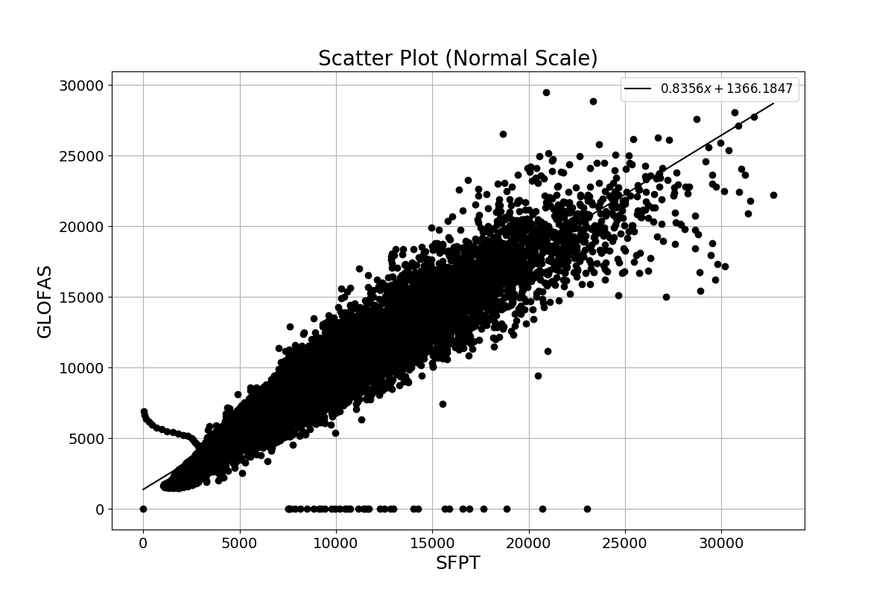
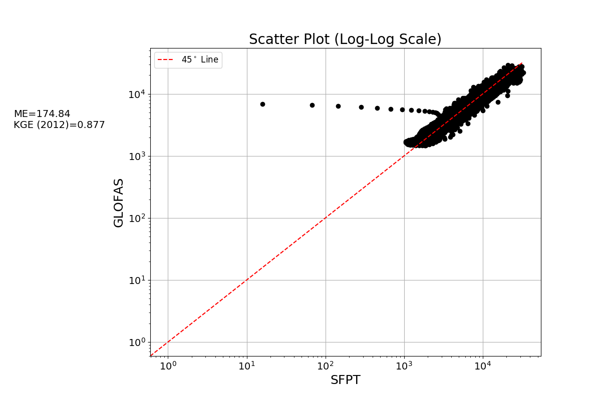

scatter¶
-
hydrostats.visual.scatter(merged_data_df=None, sim_array=None, obs_array=None, grid=False, title=None, labels=None, best_fit=False, marker_style='ko', metrics=None, log_scale=False, line45=False, figsize=(12, 8))¶ Creates a scatter plot of the observed and simulated data.
Parameters: - merged_data_df: DataFrame
Dataframe must contain a datetime type index and floating point type numbers in two columns. The left column must be simulated data and the right column must be observed data. If given, sim_array and obs_array must be None.
- sim_array: 1D ndarray
Array of simulated data. If given, merged_data_df parameter must be None and obs_array must be given.
- obs_array: 1D ndarray
Array of observed data. If given, merged_data_df parameter must be None and sim_array must be given.
- grid: bool
If True, adds a grid to the plot.
- title: str
If given, sets the title of the plot.
- labels: tuple of str
Tuple of two string type objects to set the x-axis labels and y-axis labels, respectively.
- best_fit: bool
If True, adds a best linear regression line on the graph with the equation for the line in the legend.
- marker_style: str
If give, changes the markerstyle of the points on the scatter plot. Matplotlib styling guides are found in Matplotlib Linestyles Help.
- metrics: list of str
Adds Metrics to the left side of the plot. Any metric from the Hydrostats library can be added to the plot as the abbreviation of the function. The entries must be in a list. (e.g. [‘ME’, ‘r2’, ‘KGE (2012)’]).
- log_scale: bool
If True, log-log scale will be used on the scatter plot.
- line45: bool
IF Trre, adds a 45 degree line to the plot and the legend.
- figsize: tuple of float
Tuple of length two that specifies the horizontal and vertical lengths of the plot in inches, respectively.
Returns: - fig : Matplotlib figure instance
A matplotlib figure handle is returned, which can be viewed with the matplotlib.pyplot.show() command.
Examples
A scatter plot is created in this example comparing two models.
>>> import hydrostats.data as hd >>> import hydrostats.visual as hv >>> import matplotlib.pyplot as plt
>>> sfpt_url = r'https://github.com/waderoberts123/Hydrostats/raw/master/Sample_data/sfpt_data/magdalena-calamar_interim_data.csv' >>> glofas_url = r'https://github.com/waderoberts123/Hydrostats/raw/master/Sample_data/GLOFAS_Data/magdalena-calamar_ECMWF_data.csv' >>> merged_df = hd.merge_data(sfpt_url, glofas_url, column_names=('SFPT', 'GLOFAS'))
>>> sim_array = merged_df.iloc[:, 0].values >>> obs_array = merged_df.iloc[:, 1].values
>>> scatter(merged_data_df=merged_df, grid=True, title='Scatter Plot (Normal Scale)', >>> labels=('SFPT', 'GLOFAS'), best_fit=True) >>> plt.show()
Arrays can be used as well in the parameters, as demonstrated below.
>>> scatter(sim_array=sim_array, obs_array=obs_array, grid=True, title='Scatter Plot (Log-Log Scale)', >>> labels=('SFPT', 'GLOFAS'), line45=True, metrics=['ME', 'KGE (2012)']) >>> plt.show()